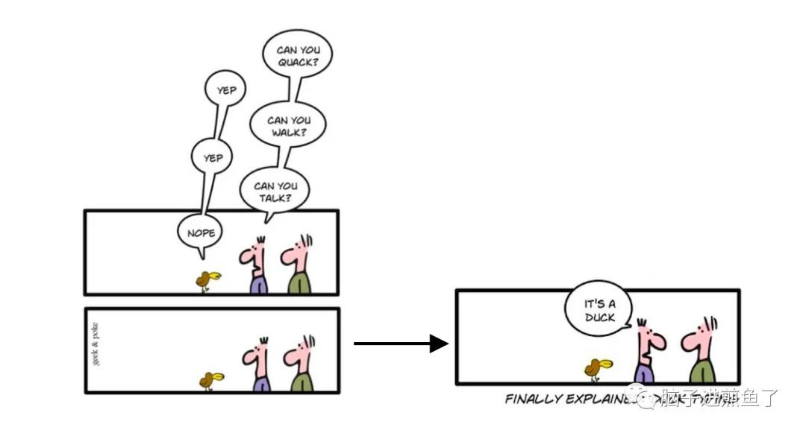
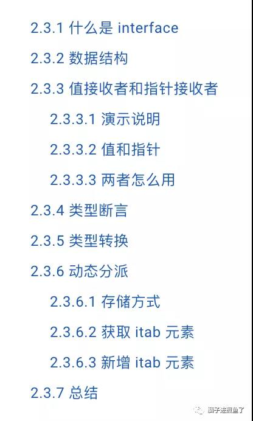
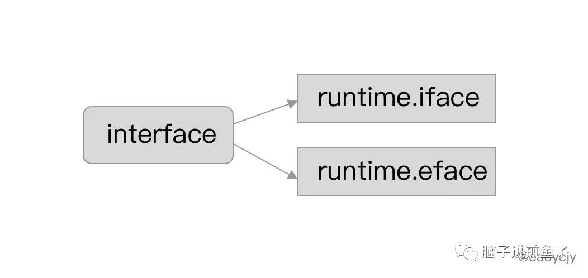
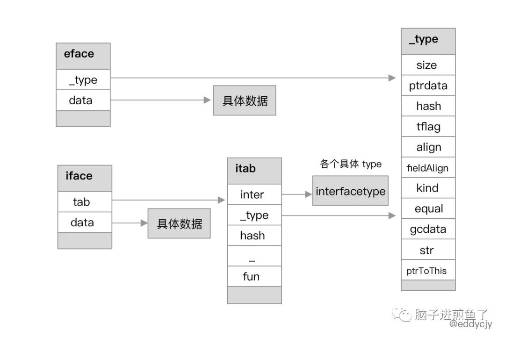
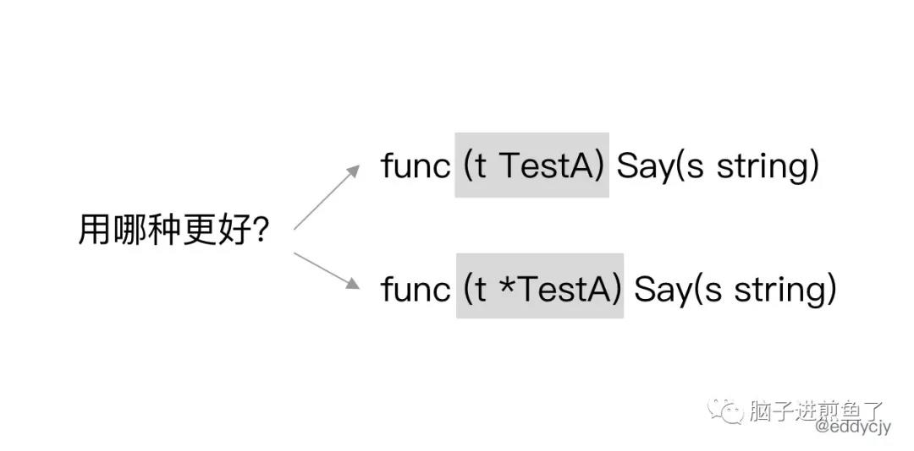

一文吃透 Go 语言解密之接口 interface
自古流传着一个传言…在 Go 语言面试的时候必有人会问接口（interface）的实现原理。这又是为什么？为何对接口如此执着？
实际上，Go 语言的接口设计在整体扮演着非常重要的角色，没有他，很多程序估计都跑的不愉快了。
在 Go 语言的语义上，只要某个类型实现了所定义的一组方法集，则就认为其就是同一种类型，是一个东西。大家常常称其为鸭子类型（Duck typing），因为其与鸭子类型类型的定义相对吻合。

图来自网络后重整在维基百科中，鸭子类型的谚语定义为 ”If it looks like a duck, swims like a duck, and quacks like a duck, then it probably is a duck.“，翻译过来就是 ”如果它看起来像鸭子，像鸭子一样游泳，像鸭子一样嘎嘎叫，那他就可以认为是鸭子“。
回归到 Go 语言，在接口之下，接口又蕴含了怎么样的底层结构，其设计原理和思考又是什么呢？我们不能只看表面，接下来在这一章节中都会进行一一分析和道来。看看其深层到底是何 “物”。
本文目录：

什么是 interface
Go 语言中的接口声明：
1 | type Human interface { |
关键字主体为 type xxx interface，紧接着可以在方括号中编写方法集，用于声明和定义该接口所包含的方法集。
更进一步的代码演示：
1 | type Human interface { |
输出结果：
1 | 煎鱼：炸鸡翅 |
我们在上述代码中，声明了一个名为 Human 的 interface，其包含一个 Say 方法。同时我们声明了一个 TestA 类型，也有自己的一个 Say 方法。他们两者的方法入参和出参类型均为一样。
而与此同时，我们在主函数 main 中通过声明和赋值，成功将类型为 TestA 的变量 t 赋给了类型为 Human 的变量 h，也就是说两者只因有了个 Say 方法，在 Go 语言的编译器中就认为他们是 “一样” 的了，这也就是业界中常说的鸭子类型。
数据结构
通过上面的功能代码一看，似乎 Go 语言非常优秀。一个接口，不同的类型，2 个包含相同的方法，也能够对标到一起。
接口到底是怎么实现的呢？底层数据结构又是什么？带着问题，我们开始深挖细节之路。
在 Go 语言中，接口的底层数据结构在运行时一共分为两类结构

体（struct），分别是：runtime.eface结构体：表示不包含任何方法的空接口，也称为 empty interface。runtime.iface结构体：表示包含方法的接口。
runtime.eface
首先我们来介绍 eface，看看 “他” 到底是何许人也。源码如下：
1 | type eface struct { |
其表示不包含任何方法的空接口。在结构上来讲 eface 非常简单，就两个属性，分别是 _type 和 data 属性，分别代表底层的指向的类型信息和指向的值信息指针。
再进一步到 type 属性里看看，其包含的类型信息更多：
1 | type _type struct { |
- size：类型的大小。
- ptrdata：包含所有指针的内存前缀的大小。
- hash：类型的 hash 值。此处提前计算好，可以避免在哈希表中计算。
- tflag：额外的类型信息标志。此处为类型的 flag 标志，主要用于反射。
- align：对应变量与该类型的内存对齐大小。
- fieldAlign：对应类型的结构体的内存对齐大小。
- kind：类型的枚举值。包含 Go 语言中的所有类型，例如：
kindBool、kindInt、kindInt8、kindInt16等。 - equal：用于比较此对象的回调函数。
- gcdata：存储垃圾收集器的 GC 类型数据。
总结一句，就是类型信息所需的信息都会存储在这里面，其中包含字节大小、类型标志、内存对齐、GC 等相关属性。而在 eface 来讲，其由于没有方法集的包袱，因此只需要存储类型和值信息的指针即可，非常简单。
runtime.iface
其次就是我们日常在应用程序中应用的较多的 iface，源码如下：
1 | type iface struct { |
与 eface 结构体类型一样，主要也是分为类型和值信息，分别对应 tab 和 data 属性。但是我们再加思考一下，为什么 iface 能藏住那么多的方法集呢，难道施了黑魔法？
为了解密，我们进一步深入看看 itab 结构体。源码如下：
1 | type itab struct { |
inter：接口的类型信息。_type：具体类型信息hash：_type.hash的副本，用于目标类型和接口变量的类型对比判断。fun：底层数组，存储接口的方法集的具体实现的地址，其包含一组函数指针，实现了接口方法的动态分派，且每次在接口发生变更时都会更新。
对应 func 属性会在后面的章节进一步展开讲解，便于大家对于接口中的函数指针管理的使用和理解，在此可以先行思考长度为 1 的 uintptr 数组是如何做到存储多方法的？
接下来我们进一步展开 interfacetype 结构体。源码如下：
1 | type nameOff int32 |
_type：接口的具体类型信息。pkgpath：接口的包（package）名信息。mhdr：接口所定义的函数列表。
而相对应 interfacetype，还有各种类型的 type。例如：maptype、arraytype、chantype、slicetype 等，都是针对具体的类型做的具体类型定义：
1 | type arraytype struct { |
若有兴趣自行翻看 runtime 里相应源码即可，都是一些基本数据结构信息的存储和配套方法，就不在此一一展开讲解了。
小结

总结来讲，接口的数据结构基本表示形式比较简单，就是类型和值描述。再根据其具体的区别，例如是否包含方法集，具体的接口类型等进行组合使用。
值接收者和指针接收者
在接口的具体应用使用场景中，有一个是大家常常会碰到，甚至会对其产生较大纠结心里的东西。那就是到底用值接收者，又或是用指针接收者来声明。

演示说明
演示代码如下：
1 | type Human interface { |
在 Human 接口中，其包含 Say 和 Eat 方法，并且在 TestA 结构体中我们进行了针对性的实现。
具体的区别就是：
- 在
Say方法中是值接收对象，如：(t TestA)。 - 在
Eat方法中是指针接收对象，如：(t *TestA)。
最终的输出结果：
1 | 说煎鱼：催更 |
值和指针
如果我们将演示代码的主函数 main 改成下述这样：
1 | func main() { |
你觉得这段代码还能正常运行吗？在编译时会出现如下报错信息：
1 | # command-line-arguments |
显然是不能的。因为接口校验不对，编译器过不了。其根本原因在于 Eat 是指针接收者。而当声明改为 TestA{} 后，其就会变成值对象，所以不匹配。
这时候又会出现新的问题，为什么在上面代码声明为 &TestA{} 时，那肯定是指针引用了，那为什么 Say 方法又能正常运行，不会报错呢？
其实 TestA{} 实现了 Say 方法，那么 &TestA{} 也能自动拥有该方法。显然，这是 Go 语言自身在背后做了一些事情。
因此如果我们实现了一个值对象的接收者时，也会相应拥有了一个指针接收者。两者并不会互相影响，因为值对象会产生值拷贝，对象会独立开来。
而指针对象的接收者不行，因为指针引用的对象，在应用上是期望能够直接对源接收者的值进行修改，若又支持值接收者，显然是不符合其语义的。
两者怎么用
既然支持值接收，又支持指针接收。那平时在工程应用开发中，到底用谁？还是说随便用？
其实问题的答案，在前面就有提到。本质上还是要看你业务逻辑所期望修改的是什么？还是说程序很严谨，每次都重新 new 一个，是值又或是指针引用对于程序逻辑的结果都没有任何的影响。
总结一下，如果你想使用指针接收者，可以想想是否有以下诉求：
- 期望接收者直接修改能够直接修改源值。
- 期望在大结构体的情况下，性能更好，可以在理论上避免每次值拷贝，但也会有增加别的开销，需要具体情况具体权衡。
但若应用场景没什么区别，只是个人习惯问题就不用过于纠结了，适度统一也是很重要的一环。
类型断言
在 Go 语言中使用接口，必搭配一个 “技能”。那就是进行类型断言（type assertion）：
1 | var i interface{} = "吃煎鱼" |
在 switch case 中，还有另外一种写法：
1 | var i interface{} = "炸煎鱼" |
采取的是 (变量).(type) 的调用方式，再给予 case 不同的类型进行判断识别。在 Go 语言的背后，类型断言其实是在编译器翻译后，根据 iface 和 eface 分别对应了下述方法：
1 | func assertI2I2(inter *interfacetype, i iface) (r iface, b bool) { |
主要是根据接口的类型信息进行一轮判断和识别，基本就完成了。主要核心在于 getitab 方法，会在后面进行统一介绍和说明。
类型转换
演示代码如下：
1 | func main() { |
查看汇编代码：
1 | 0x0021 00033 (main.go:9) LEAQ go.string."煎鱼"(SB), AX |
主要对应了 runtime.convTstring 方法。同时很显然其是根据类型来区分来方法：
1 | func convTstring(val string) (x unsafe.Pointer) { |
动态分派
前面有提到接口中的 fun [1]uintptr 属性会可以存储接口的方法集，但不知道为什么。
接下来我们将进行具体的分析，演示代码：
1 | type Human interface { |
存储方式
执行 go build -gcflags '-l' -o awesomeProject . 编译后，再次执行 go tool objdump -s "main" awesomeProject。
查看具体的汇编代码：
1 | LEAQ go.itab.main.TestA,main.Human(SB), AX |
结合来看，虽然 fun 属性的类型是 [1]uintptr，只有一个元素，但其实就是存放了接口方法集的首个方法的地址信息,接着根据顺序往后计算并获取就好了。也就是说其是存在一定规律的。在存入方法时就决定了，所以获取也能明确。
我们进一步展开，看看 itab hash table 是如何获取和新增的。
获取 itab 元素
getitab 方法的主要作用是获取 itab 元素，若不存在则新增。源码如下：
1 | func getitab(inter *interfacetype, typ *_type, canfail bool) *itab { |
调用
atomic.Loadp方法加载并查找现有的 itab hash table，看看是否是否可以找到所需的 itab 元素。若没有找到，则调用
lock方法对itabLock上锁，并进行重试（再一次查找）。- 若找到，则跳到
finish标识的收尾步骤。 - 若没有找到，则新生成一个 itab 元素，并调用
itabAdd方法新增到全局的 hash table 中。
- 若找到，则跳到
返回
fun属性的首位地址，继续后续业务逻辑。
新增 itab 元素
itabAdd 方法的主要作用是将所生成好的 itab 元素新增到 itab hash table 中。源码如下：
1 | func itabAdd(m *itab) { |
- 检查 itab hash table 的容量情况，查看容量情况是否已经满足大于或等于 75%。
- 若满足扩容策略，则调用
mallocgc方法申请内存，按既有size大小扩容双倍容量。 - 若不满足扩容策略，则直接新增
itab元素到 hash table 中。
总结
在本文中，我们先介绍了 Go 语言接口的 runtime.eface 和 runtime.iface 两个基本数据结构，其代表了一切的开端。
随后针对值接受者和指针接收者进行了详细的说明，同时日常用的较多的类型断言和转换也一一进行了描述。
最后对接口的多方法这个神秘的地方进行了基本分析和了解，相信这一番轮流吸收下来，能够打开大家对接口的一个新的理解。